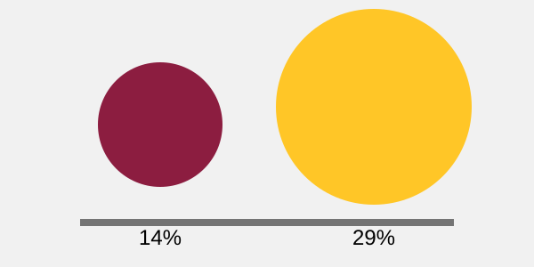

1 · External content image
TODO: Embed comparison.svg as a meaningful image and provide the right text alternative.

2 · Inline, styleable graphic
TODO: Copy the SVG markup here, name and describe it, and replace fixed fills with the supplied tokens.
3 · Decorative background
This section needs a decorative version that contributes no essential information or accessibility-tree noise.
Method comparison
| Method | Best use | Styling reach | Alternative strategy |
|---|---|---|---|
img
|
Meaningful images that do not need individual parts styled. | CSS can style the whole image, but not individual shpaes. | Use descriptive alt texts. |
| Inline SVG | Graphics that need custom styling or interaction. | CSS can style individual shapes and elements. | Use title and desc with aria-labelledby. |
| CSS background | Decorative graphics that do not provide essential information. | CSS controls background size and position, not individual SVG shapes. | No alt text needed because it is decorative. |